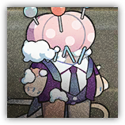
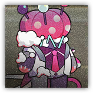

梦游管家 Sleepwalking Butler
近战 物理；精英 构装

|
 |
长夜里在城堡中游荡的管家人偶。擅长为城堡中所有的房间置办柔软轻盈的床上用品，以及痛击进入梦城堡的坏人。 |
梦游管家丨Sleepwalking Butler
中型构装（梦境造物），中立
| AC 18 | 先攻 +3（13） |
| HP 187（22d8+88） | |
| 速度 30 尺 | |
| 调整 | 豁免 | 调整 | 豁免 | 调整 | 豁免 | |||||||||
|---|---|---|---|---|---|---|---|---|---|---|---|---|---|---|
| 力量 | 18 | +4 | +4 | 敏捷 | 17 | +3 | +3 | 体质 | 18 | +4 | +4 | |||
| 智力 | 11 | +0 | +0 | 感知 | 17 | +3 | +3 | 魅力 | 16 | +3 | +7 |
| 技能 巧手+7，察觉+7 |
| 抗性 心灵 |
| 免疫 中毒，力竭 |
| 感官 黑暗视觉120尺；被动察觉17 |
| 语言 懂通用语但不能说 |
| CR 11（XP 7,200；PB +4） |
特质 Traits
月下异变 Moon Mutation。梦游管家投掷先攻后，若处于明亮光照下开始自己的回合，则其获得1层剪刀强化（至多3层，战斗结束后消失）。梦游管家发动攻击时，可以消耗1层剪刀强化使得该次攻击的触及距离增加5尺，且在命中时额外造成16（3d8）心灵伤害。
动作 Actions
多重攻击 Multiattack。梦游管家发动三次渐长的剪刀攻击。
渐长的剪刀 Elongating Scissors。近战攻击检定：+8，触及5尺。命中：20（3d10+4）挥砍伤害。
梦游大总管 Sleepwalking Majordomo
近战 物理；精英 构装
|
 |
长夜里在城堡中游荡的总管人偶。随着月光的照耀，它们手中的剪刀也会发生变化，大概是为了剪裁面积更大的布料，应该是吧？ |
梦游大总管丨Sleepwalking Majordomo
中型构装（梦境造物），中立
| AC 18 | 先攻 +3（13） |
| HP 212（22d8+100） | |
| 速度 30 尺 | |
| 调整 | 豁免 | 调整 | 豁免 | 调整 | 豁免 | |||||||||
|---|---|---|---|---|---|---|---|---|---|---|---|---|---|---|
| 力量 | 19 | +4 | +4 | 敏捷 | 17 | +3 | +3 | 体质 | 18 | +4 | +4 | |||
| 智力 | 11 | +0 | +0 | 感知 | 17 | +3 | +3 | 魅力 | 16 | +3 | +8 |
| 技能 巧手+7，察觉+7 |
| 抗性 心灵 |
| 免疫 中毒，力竭 |
| 感官 黑暗视觉120尺；被动察觉17 |
| 语言 懂通用语但不能说 |
| CR 13（XP 10,000；PB +5） |
特质 Traits
月下异变 Moon Mutation。梦游大总管投掷先攻后，若处于明亮光照下开始自己的回合，则其获得1层剪刀强化（至多3层，战斗结束后消失）。梦游大总管发动攻击时，可以消耗1层剪刀强化使得该次攻击的触及距离增加5尺，且在命中时额外造成22（4d10）心灵伤害。
动作 Actions
多重攻击 Multiattack。梦游大总管发动三次渐长的剪刀攻击。
渐长的剪刀 Elongating Scissors。近战攻击检定：+9，触及5尺。命中：20（3d10+4）挥砍伤害。